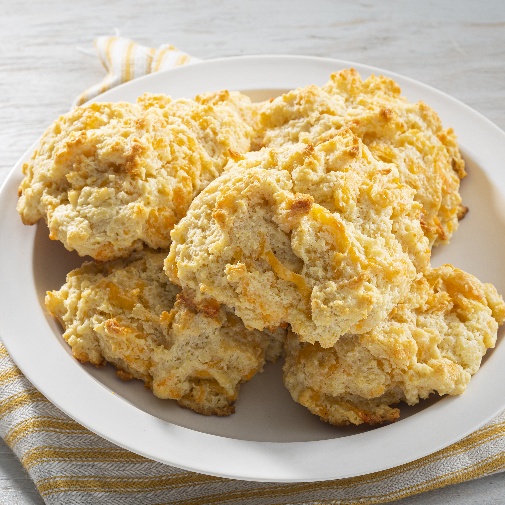

Red Lobster™ Cheddar Biscuits

No need to make a trip to the restaurant to enjoy this famous cheesy bread.
Red Lobster™ biscuits are loaded with Cheddar cheese and brushed with seasoned butter in this easy copycat
recipe. No kneading is required — just drop the gently mixed batter directly onto a prepared baking sheet
and your warm, freshly baked, bite-sized biscuits will be ready to enjoy with dinner in just 15 minutes.
Ingredients
- 2 cups all-purpose flour
- 1 cup shredded Cheddar cheese
- 1 tablespoon baking powder
- 1 teaspoon salt
- ½ teaspoon garlic powder
- ⅔ cup milk
- ⅓ cup butter, softened and cut into pieces
- 1 large egg
- 2 tablespoons butter, melted
- 2 teaspoons dried parsley (Optional)
- 1 teaspoon garlic powder (Optional)
Steps
- Preheat the oven to 400 degrees F (200 degrees C). Line a baking sheet with parchment paper.
- Stir flour, Cheddar cheese, baking powder, salt, and garlic powder together in a bowl.
- Stir milk, softened butter pieces, and egg together in a separate bowl. Add to the flour
mixture and stir until just combined and chunky, being very careful not to overmix.
- Drop batter by tablespoonfuls onto the prepared baking sheet.
- Bake in the preheated oven for 10 minutes.
- Meanwhile, stir melted butter, parsley, and garlic powder together in a small bowl.
- Remove biscuits from the oven and brush melted butter mixture over top. Return to the oven and bake
until golden brown, about 5 more minutes. Serve warm.
**All recipe content, images, and text taken from the recipe found at:
AllRecipes.com**